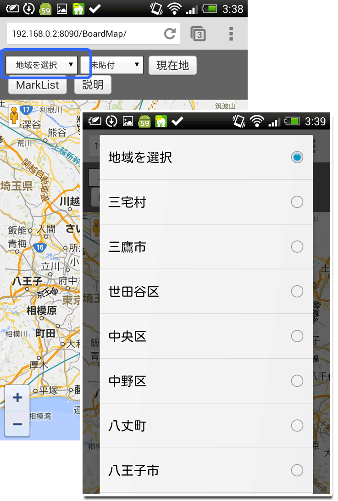
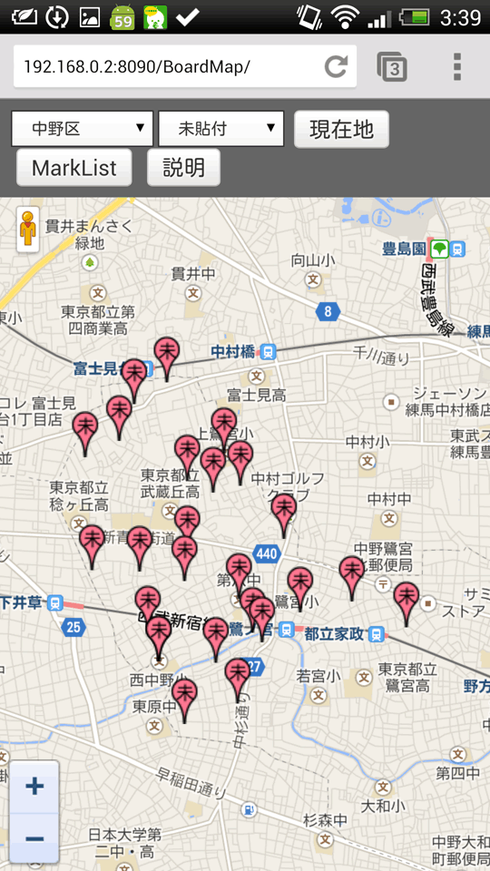
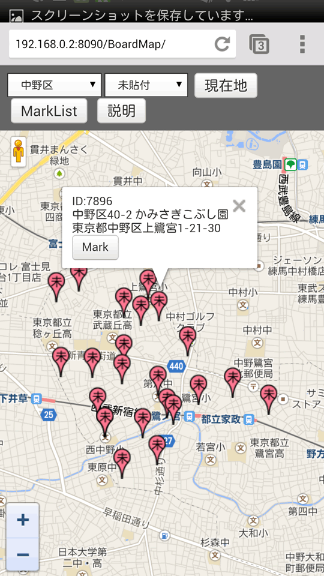
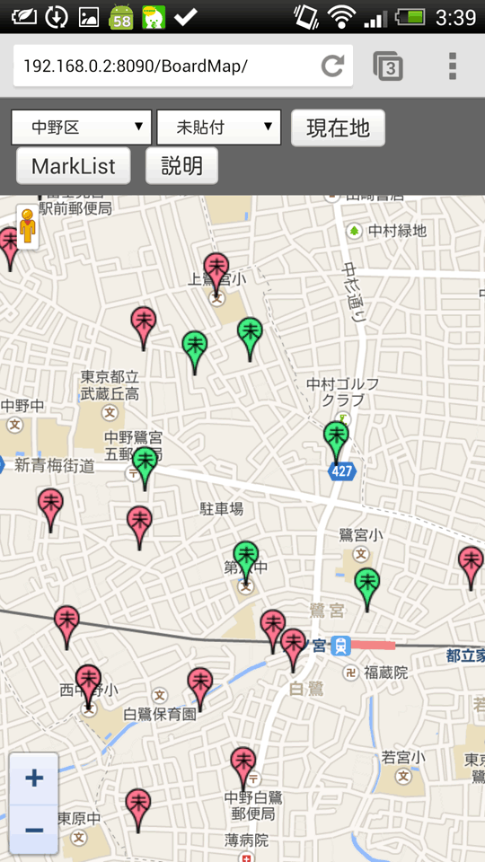

使い方この説明を別ウインドウで開く
ポスターを貼り付けたい場所を確認します
「地域を選択」からポスターを貼り付けたい地域を選択します。（ex 中野区）

ポスターの場所がピンで表示されます。

貼り付けの終わっていない場所は赤色で「未」と表示。
終わっている箇所は水色で「終」と表示されます。
ピンをタップすると、掲示板の詳細な住所が表示されます。

貼り付けが終わったら
終わった場所のピンをタップして、左下の「Mark」ボタンを押します

その場所が緑色に変わり、スマホに記憶されます。記憶した場所は画面上部の「MarkList」から確認出来ます。
上記を繰り返して、どんどんポスターを貼っていって下さい。

全ての貼り付け作業が終わったら
画面上部の「MarkList」から先ほど記憶した場所が表示されますので、その場所を報告して下さい。

便利な使い方
「現在地」のボタンを押すと、その付近のポスターの場所がピンで表示されます。今居る場所の掲示板を探す時に便利です。
機能一覧
「地域を選択」
表示したい掲示板のある区を選択すると、その区の掲示板の位置が表示されます。
表示出来るのは1つの区だけです。
ステータス
「未貼付の物」と「貼付完了」の掲示板の表示を切り替えます
通常は「未貼付の物」でOKです。
現在地
現在地に移動します。GPSをオンにして下さい。
MarkList
地図上に表示された、掲示板の位置をタップすると、住所等が書かれた吹き出しが表示されます。
吹き出し下の「Mark」ボタンをタップすると、その掲示板が緑色でマークされます。
マークした掲示板が「MarkList」で一覧表示されます。